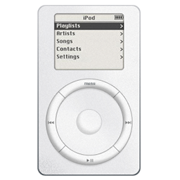

Welcome to iPod History!
Hello! Welcome to iPod History! This is a site about the apple's greatest music product...the iPod. Our About page includes the history of iPods and our Products page includes some of the different iPods relased and the accesories.
The creator of our site, Amari Odum, got her first iPod at seven years old. Her mother got the first generation iPod Touch and Amari instantly fell in love with it. Amari loves music and had all of her music on separate CD's untill she got an iPod. Her first iPod was the fourth generation iPod Shuffle in the pink color. She also got a second one, the sixth generation iPod Nano. You can learn mother about these products on the Product page.